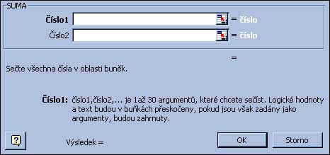

obr.3 |  obr.4 |
- Zadávanie oblastí vo funkcii
- samotná bunka ... SUMA(C7)
- jedna oblasť ... SUMA(B3:D5)
- oblasti oddelené čiarkou ... SUMA(C7,B3:D5)
|
|
- Výpočet platu spolu bez funkcie - =B2+B3+B4+B5+B6 Tento spôsob je použitelný pre menší počet argumentov, tiež každé pridanie-ubratie riadku nás núti meniť vzorec, čo je nepraktické.
- Výpočet platu spolu s funkciou SUMA
- nastavíme kurzor do políčka B7
- stlačíme tlačítko Suma
- Excel sa pokúsi označiť blok, ktorý chceme spočítať
- ak s jeho návrhom súhlasíme stlačíme Enter
- ak chceme sčítač iný blok označíme ho manuálne - Teraz si pozrieme výsledok - v bunke bude zapísane SUMA(B2:B7)
čo vlastne znamená SPOČÍTAJ bunky od B2 po B7
- SUMA(zoznam oblastí oddelených čiarkou)
-
Spočíta všetky bunky všetkých zadaných oblastí, ak sú tam bunky textové nevadí, berie ich ako 0.
Príklad SUMA(a1,B2:C10) - PRUMER(zoznam oblastí oddelených čiarkou)
- Spočíta všetky bunky všetkých zadaných oblastí a vydelí počtom číselných buniek v rozsahu.
Príklad PRUMĚR(a1,B2:C10) - Max(zoznam oblastí oddelených čiarkou)
- Nájde maximálnu číselnú hodnotu zo všetkých vymenovaných oblastí.
Príklad MAX(a1,B2:C3) ... nájde maximum z A1,B2,B3,C2,C3 - Min(zoznam oblastí oddelených čiarkou)
- Nájde minimálnu číselnú hodnotu zo všetkých vymenovaných oblastí.
Príklad MIN(a1,B2:C3) ... nájde minimum z A1,B2,B3,C2,C3 - SUMIF(oblasť podmienok, podmienka, obkasť sčitovania)
- oblasť podmienok - oblasť kde sa kontroluje podmienka
podmienka - buď hodnota, alebo testovacia otazka ako text v úvodzovkách
oblasť súčtu - oblasť ktorá vytvára súčet
Je vlastne cyklus, kde bežia ukazovatele na oboch oblastiach, ak prvá hodnota vyhovuje podmienke, druhá hodnota je pridaná do súčtu. Je odporúčané voliť obe oblasti rovnako početné.
Príklad
obr. 5A B C D 1 1 15 =sumif(a1:a5,1,b1:b5) 2 2 10 3 1 2 4 3 5 5 1 3 V bunke D1 bude hodnota 20 získaná súčtom 15+2+3
- COUNTIF(oblast, podmienka)
- Podmienka: najjednoduhšia je iba uvedená hodnota, napr. 5, Jano, Pravda
môže byť aj výraz napr. E15 - nepíšeme rovná sa pred
okrem rovnosti môžeme tvoriť podmienky pomocou relačných operátorov >,< >= <= <>, ale potom musí byť podmienka ako textový výraz. Spočíta počet buniek v zadanej oblastí, ktoré spĺňajú danú podmienku.
Príklad COUNTIF(B2:C10,1) ... spočíta počet 1 v oblasti B2:C10
COUNTIF(B2:C10,"<0") spočíta počet záporných čísel - COUNTBLANK(zoznam oblastí oddelených čiarkou)
- Zistí počet prázdnych buniek vo výbere
Príklad COUNTBLANK(a1,B2:C3) ... zistí počet prázdnych buniek z A1,B2,B3,C2,C3 - ZAOKROUHLIT(výraz, počet des.)
- vyhodnotí daný výraz a zaokrúhli ho na daný počet des. miest.
Príklad: ZAOKROUHLIT(3.2, 0) -> 3
ZAOKROUHLIT(3.226, 2) -> 3.23 - ABS(výraz), SIN(výraz), COS(výraz), TG(výraz), EXP(výraz),LN(výraz),LOG(výraz),PI()
- standartné matematické funkcie, pri goniometrických funkciách je argument samozrejme v radiánoch.
- SUBTOTAL(číslo_fun, oblasť)
- Táto funkcia dokáže zastúpiť viacero už spomenutých funkcií ale pre svoju pomernú zložitosť sa používa len v spojitosti
s filtrovaním. Jej uplatnenie je v tom, že do výsledku neberie riadky, ktoré nevyhovujú podmienke nastaveného filtra (pozri filtrovanie).
Napr. hodnota funkcie SUMA sa nezmení aj keď nastavením filtra sa sa zníži počet riadkov výberu, ale hodnota
funkcie SUBTOTAL(9,...) sa bude meniť podľa zvoleného filtra. Funkcia má dva parametre:
1. určuje činnosť funkcie
2. určuje oblasťČíslo funkce Funkce 1 PRŮMĚR 2 POČET 3 POČET2 4 MAX 5 MIN 6 SOUČIN 7 SMODCH.VÝBĚR 8 SMODCH 9 SUMA 10 VAR.VÝBĚR 11 VAR
|
|
|
- Když(podmienka,ano,nie)
-
Používa sa ak obsah bunky sa má úplne meniť podľa nejakej podmienky.
Vyhodnotí podmienku a ak je podmienka pravdivá vyhodnotí a zobrazí výraz ano inak vyhodnotí a zobrazí výraz nie
Príklad: když(c5>0,kladné,když(c5<0,záporné,nulové)) - A(zoznam log. výrazov oddelených čiarkou)
-
vyhodnotí log. výrazy a urobí medzi nimi operáciu and
Výsledkom je výsledný logický výraz. Používa sa na tvorbu zložených podmienok.
Príklad: když(A(c5>0,c5"),vyhovuje,nevyhovuje) - NEBO(zoznam log. výrazov oddelených čiarkou)
-
vyhodnotí log. výrazy a urobí medzi nimi operáciu or
Výsledkom je výsledný logický výraz. Používa sa na tvorbu zložených podmienok.
Príklad: když(A(c5>0,c6>0),aspon jedno kladné,ani jedno kladné) - NE(logický výraz)
-
vyhodnotí log. výrazy a urobí jeho negáciu
Výsledkom je výsledný logický výraz. Používa sa na tvorbu zložených podmienok.
Príklad: když(NE(c5>0),nekladné,kladné)
|
|
|
- DATUMHODN(text), DATUM(cislo_den, cislo_mes, cislo_rok)
-
prevedie text (resp. 3 čísla) na dátum. Používa sa ak je dátum zapísaný roztrhnuto (den, mes, rok v samostatných stĺpcoch)
a potrebujeme vykonať nejaké dátumové príkazy (zistiť rozdiel dní, deň v týždni a pod)
Príklad: DATUMHODN("25.03.2004")-DATUMHODN(11.09.2002) ... zistí počet dní medzi dátumami - DEN(datumový_výraz)
-
Z dátumu vie vytiahnuť deň.
Príklad: DEN(DATUMHODN("25.03.2004")) -> 25 - MESIC(datumový_výraz)
-
Z dátumu vie vytiahnuť číslo mesiaca.
Príklad: MESIC(DATUMHODN("25.03.2004")) -> 3 - ROK(datumový_výraz)
-
Z dátumu vie vytiahnuť číslo mesiaca.
Príklad: ROK(DATUMHODN("25.03.2004")) -> 2004 - DENTYDNE(datumový_výraz,2) alebo DENTYDNE(text,2)
-
Z dátumu vie vytiahnuť číslo poradové číslo dňa v týždni 1=pondelok, ....
Príklad: DENTYDNE(DATUMHODN("25.03.2004")) -> 6 - DNES()
-
Hodnotou je dnešný dátum ako dátumová hodnota
Príklad: DNES() -> vypíše napr. 27.03.2004 - NYNI()
-
Hodnotou je dnešný dátum a aktuálny čas
Príklad: NYNI() -> vypíše napr. 27.03.2004 10:08 - ČASHODN(text), ČAS(cislo_hod, cislo_min, cislo_sek)
- prevedie text (resp. 3 čísla) na časový údaj.
- HODINA(časový_výraz)
-
Z časového údaja vie vytiahnuť hodinu.
Príklad: HODINA(NYNI()) -> 10 - MINUTA(časový_výraz)
-
Z časového údaja vie vytiahnuť minutu.
Príklad: HODINA(NYNI()) -> 8 - SEKUNDA(časový_výraz)
-
Z časového údaja vie vytiahnuť sekundu.
Príklad: SEKUNDA(NYNI()) -> 15